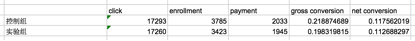
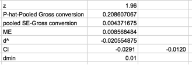
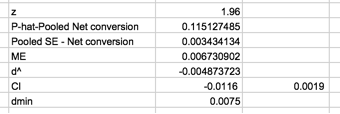

说明：点击此处下载此文档的英文版本。
模板格式
此模板可用于组织你最终项目的答案。应从你的答案中复制到小测试中的项用蓝色显示。
度量选择
列出你将在此用作不变度量和评估度量的度量。（这些应与你在“选择不变度量”和“选择评估度量”小测试中使用的度量一样）
-
cookie
的数量：不变度量。原因- 实验在产生cookies 之后，不会影响cookies。
-
用户 id 的数量：不适用。回受实验影响，但userid 可能是由于两组的cookie数不同或实验影响，不好区分。
-
点击次数：不变度量。原因-发生在实验前，不受实验影响。
-
点进概率：不变度量。原因-发生在实验前，不受实验影响。
-
总转化率：评估度量。原因-提问可能会影响愿意选择‘免费试学’的比例。
-
留存率：不使用用，后续计算出的实验样本要求太多，运行时间过长。
-
净转换率：评估度量。原因-实验可能会影响‘免费试学’用户数。
对于每个度量，解释你为什么使用或不使用它作为不变度量和评估度量。此外，说明你期望从评估度量中获得什么试验结果。
总转换率 期望： 减少时间不足的同学注册，会降低
留存率 期望：注册的学生对投入时间有更好认知，提高了留存率
净转换率 期望： 投入时间不足的学生由放弃变成不注册，因此净转化率不变。
测量标准偏差
列出你的每个评估度量的标准偏差。（这些应是来自“计算标准偏差”小测试中的答案。）
总转化率: 0.0202 （N=5000*0.8=400）
净转化率：0.0156（N=5000*0.8=400）
留存率：0.0549（N=5000*0.8*0.20625=82.5）
对于每个评估度量，说明你是否认为分析估计与经验变异是类似的，或者你是否期望它们是不同的（如果是这样，在时间允许的情况下将有必要进行经验估计）。简要说明每个情况的理由。
总转化率、净转化率 unit of diversion = unit of analysis，都是为点击cookies 的click。
留存率 unit of diversion = unit of analysis , 都为完成登录的
用户 id 数。
规模
样本数量和支持
说明你是否会在分析阶段使用
Bonferroni 校正，并给出你适当开展试验所需的支持网页访问数。（这些应是来自“计算网页访问数”小测试中的答案。）
不使用Bonferroni校正，总转化率和净转化率并非独立，如使用会使实验结果过于保守。
总转化率 size1=25835
净转换率 size2 = 27413
选择size2
样本N = size2/0.08= 685325
不选择留存率作为评估度量的原因是：
Retention:
Baseline conversion rate: 53%, dmin=
1%
Samples needed: 39,115
Page views: 39115/660400002=4741212
需要持续时间 4741212/40000=119天，A/B 测试一般要控制在30天以内，因此排除。
持续时间和风险暴露
说明你会将哪一部分流量转入此试验，以及鉴于此条件，你需要多少天来运行试验。（这些应是来自“选择持续时间和风险暴露”小测试中的答案。）
说明你选择所转移流量部分的原因。你认为此试验对优达学城来说有多大风险？
因为只是网页显示，对优达学城风险较低，只是注册时加入提醒步骤，不涉及敏感信息；也不存在财务风险、数据库安全方面的变动，用户确认投入的时间也不存在伦理的防线。因此更快速完成测试更重要。
合理性检查
对于每个不变度量，对你期望观察到的值、实际观察的值及度量是否通过合理性检查给出 95% 置信区间（这些应是来自“合理性检查”小测试中的答案）。
对于任何未通过的合理性检查，根据每日数据解释你猜测的最可能的原因。在所有合理性检查通过前，不要开始其他分析工作。
Number of cookies:
SE = sqrt(0.5*0.5/(345543+344660)=0.00060184074
Confidence interval = （0.4988， 0.5012） observed: 0.5006
Pass
Number of clicks: 方法同上
Confidence interval = （0.4959， 0.0830） observed: 0.5005
Click-through-probability:
控制组 p = 0.0821，SE=0.0005，confidence interval: （0.0812，0.0830）
实验组： p = 0.0822
pass
结果分析效应大小检验
对于每个评估度量，对试验和对照组之间的差异给出 95% 置信区间。说明每个度量是否具有统计和实际显著性。（这些应是来自“效应大小检验”小测试的答案。）


Gross conversion: CI 在0和dmin 之外，具有统计和实际性显著

Net conversion: CI 包含0和dmin, 不具备统计和实际显著性
符号检验
对于每个评估度量，使用每日数据进行符号检验，然后报告符号检验的 p 值以及结果是否具有统计显著性。（这些应是“符号检验”小测试中的答案。）
Gross conversion:
Suceess:4 , trails:23
P = 0.0026
因此具有统计显著性
Net Conversion:
Successes: 10, trails:23
P=0.6776
不具备统计显著性
汇总
说明你是否使用了 Bonferroni 校正，并解释原因。若效应大小假设检验和符号检验之间存在任何差异，描述差异并说明你认为导致差异的原因是什么。
不使用Bonferroni校正，并不存在有多个独立指标需要测试的情况。
建议
提供建议并简要说明你的理由。
不应该进行这个变动。总转化率显示统计和实质性的降低，与预期一致。
而净转化率的置信区间包含负数，说明在投入时间和人力后，净转化率可能会减少。
按照设想，增加对用户投入时间的提示，应该会至少维持净转化率，提高注册用户感知。提高用户的留存率，对公司收入有证明意义，为了探究原因，可以测试增加用户投入时间的提醒，来看是否打成能
后续试验
对你会开展的后续试验进行概括说明，你的假设会是什么，你将测量哪些度量，你的转移单位将是什么，以及做出这些选择的理由。
对每天投入的时间通过邮件或短信向用户提示。
H0：每天提示不会提高净留存率
转移单位：userid
不变度量：userid
可变度量：retention rate(留存率)